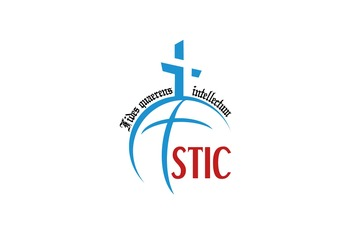
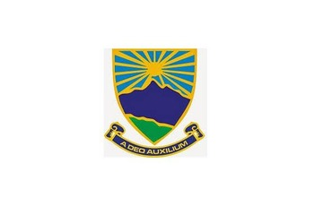
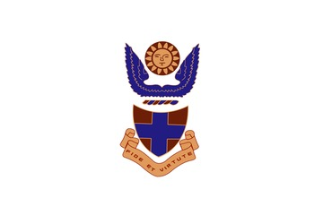
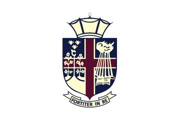
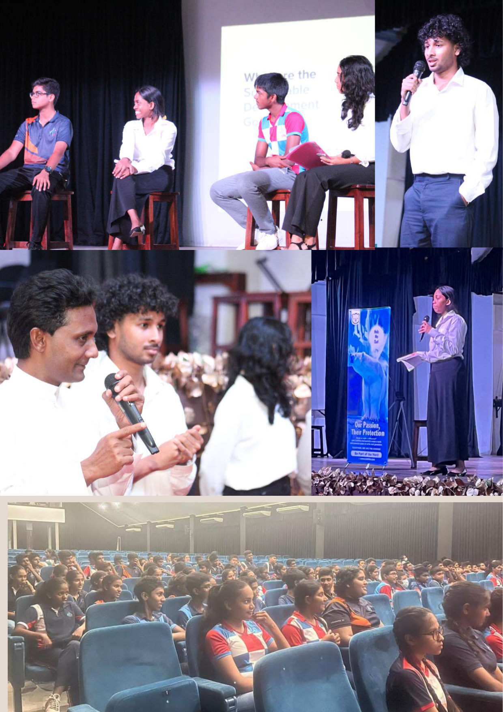
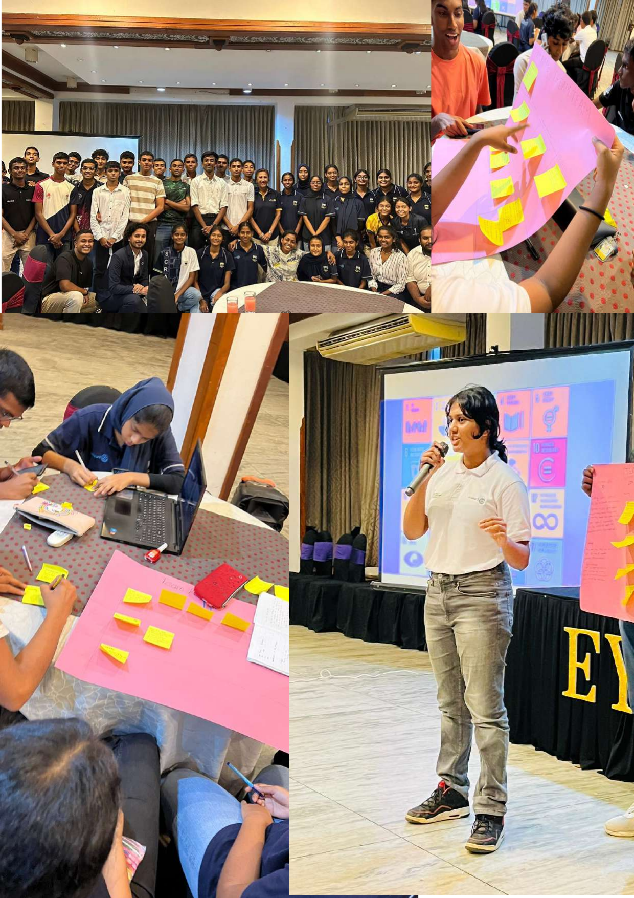

Learn in school
Climate change, biodiversity loss, pollution, human rights, journalism, gender and the SDGs—explained in ways that fit the age group and local context.
CuteFela works with schools to make climate, biodiversity and human-rights learning practical. Students learn the issue, meet people working on it, and get a route into field experience or local action.
It combines school-based learning with hands-on exposure to conservation settings and encourages students to build ongoing focal points or working groups rather than treating the session as a one-off event.
The EYC project proposal is built around two phases: learning inside school and seeing conservation work in the field. We have refined that into a three-step delivery model that is easier to repeat and measure.
Climate change, biodiversity loss, pollution, human rights, journalism, gender and the SDGs—explained in ways that fit the age group and local context.
Field exposure can include national parks, zoological gardens, restoration sites or disaster-affected areas so students can see how institutions and practitioners respond.
Working groups, focal points, nurseries, biodiversity spaces or student-led projects give the programme a life after the event.
The organisations below are included in current CuteFela programme materials. We present every crest at the same visual scale so no school is treated as a decorative afterthought.




These excerpts come from CuteFela’s EYC project material and show programme sessions, group work and student participation.


Tell us the age group, school context, time available and what you want students to leave with. We can shape the format around that.
Talk to the programme team →